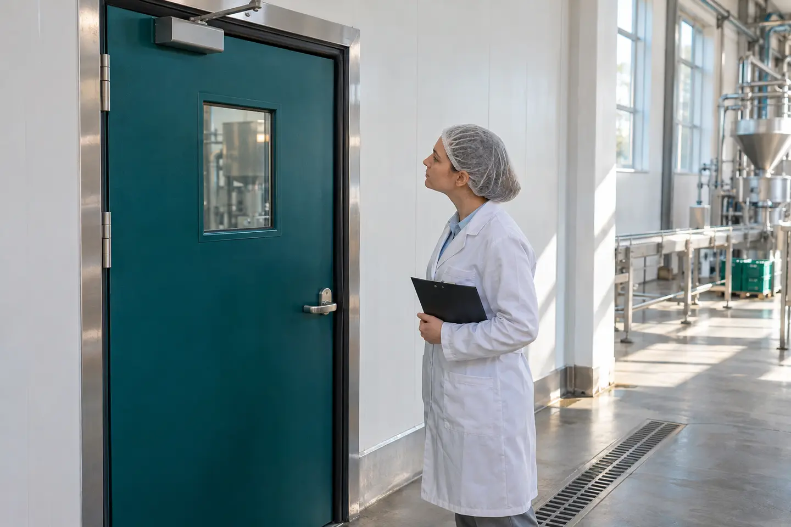

En una planta de alimentos, planificar el control de plagas implica mirar más que un hallazgo puntual. Conviene describir el establecimiento, observar las condiciones que pueden facilitar el ingreso o la permanencia de plagas y acordar cómo se hará el seguimiento.
Los Principios Generales de Higiene de los Alimentos del Codex Alimentarius señalan que el diseño y mantenimiento del edificio, la limpieza, la inspección de materiales y un monitoreo efectivo ayudan a reducir la posibilidad de infestación y la necesidad de plaguicidas. El plan concreto depende de cada instalación y de su operación.
1. Describí el establecimiento y su actividad
Al preparar una consulta, indicá si se trata de una planta procesadora, un secadero, un molino, una envasadora u otro establecimiento del sector. También ayuda resumir qué se recibe, dónde se procesa y almacena, cómo se despacha y qué sectores están activos durante cada turno.
El Capítulo II del Código Alimentario Argentino define el ámbito de un establecimiento elaborador incluyendo el local y su área perimetral, además de sectores vinculados con recepción, almacenamiento y despacho. Por eso, para entender el contexto conviene describir el recorrido completo de los insumos y productos, no solamente el área de elaboración.
2. Registrá qué observaste y dónde
Anotá la fecha, el sector y el tipo de señal observada. Si es posible, sumá una foto tomada sin manipular restos o elementos desconocidos. Diferenciá lo que viste directamente de lo que te comentaron otras personas; ese contexto facilita orientar la conversación inicial.
Un registro sencillo también ayuda a reconocer si las observaciones se repiten en un mismo punto o aparecen en distintas áreas. No hace falta sacar conclusiones sobre la causa antes de revisar el establecimiento.
3. Mirá los accesos y el estado de la infraestructura
Puertas, ventanas, aberturas de ventilación, drenajes, uniones y espacios alrededor de cañerías son algunos de los puntos que conviene incluir en un recorrido. Revisá si hay aperturas, roturas o sectores que necesiten mantenimiento y anotá su ubicación para poder consultarlo.
El Codex recomienda mantener las instalaciones en buen estado y reparar los puntos por donde puedan ingresar plagas. La evaluación debe considerar el diseño y las condiciones reales de cada planta.

4. Incluí el entorno, la limpieza y los residuos
Al describir el lugar, mencioná cómo se organizan la limpieza, el almacenamiento y el retiro de residuos, así como cualquier condición del entorno que quieras revisar. Son datos útiles para comprender el escenario completo y pensar medidas preventivas junto con el establecimiento.
La prevención no depende de una sola acción: las prácticas de higiene, el mantenimiento y el seguimiento se complementan. Por eso, una consulta inicial es más útil cuando incluye tanto el interior como las áreas cercanas que forman parte de la operación.
Si es la primera revisión
Ubicá los sectores y reuní cómo se reciben, elaboran y despachan los productos.
Si ya hay un plan
Revisá qué cambió desde la última visita: horarios, layout, accesos o recorridos.
5. Coordiná cualquier medida con la producción
Antes de planificar un trabajo, identificá los horarios de producción, las áreas sensibles, los equipos y los productos que podrían requerir protección o coordinación. Consultá qué preparación hace falta, qué sectores se abordarían y qué indicaciones deben seguirse después de la intervención.
Los productos, métodos y precauciones no se pueden definir de forma general para todas las plantas. Deben evaluarse para el establecimiento concreto y de acuerdo con las instrucciones y requisitos aplicables.
¿Estás armando un plan para tu planta?
Contanos qué tipo de establecimiento tenés y cómo se organiza la producción. Eso ayuda a preparar una primera conversación.
6. Acordá cómo se hará el seguimiento
Una vez definido el alcance, es útil saber qué puntos se revisarán, quién compartirá las observaciones y cómo se documentarán los próximos pasos. Un seguimiento ordenado permite revisar cambios en las condiciones del lugar y ajustar las medidas cuando sea necesario.
¿Una intervención puntual alcanza?
No se puede responder sin conocer el sitio. El Codex plantea la prevención, el mantenimiento, la limpieza, la inspección y el monitoreo como partes de un enfoque de higiene; el tipo y la frecuencia de las medidas deben definirse según las condiciones de cada establecimiento.
Consultá por tu establecimiento
Ultisol orienta su propuesta de Manejo Integrado de Plagas a plantas procesadoras, secaderos, molinos y envasadoras. La atención se centra en Misiones; para proyectos puntuales en Corrientes, consultá disponibilidad según la localidad y el trabajo.
Si querés iniciar una conversación, compartí el tipo de establecimiento, la localidad y qué necesitás revisar.
Fuentes para ampliar
- FAO y OMS: Principios generales de higiene de los alimentos, CXC 1-1969, sección 11.2.
- Argentina.gob.ar: Código Alimentario Argentino, Capítulo II, versión publicada en abril de 2025.
Este artículo brinda información general y no reemplaza la evaluación técnica de un establecimiento ni la consulta de la normativa vigente aplicable a cada actividad.